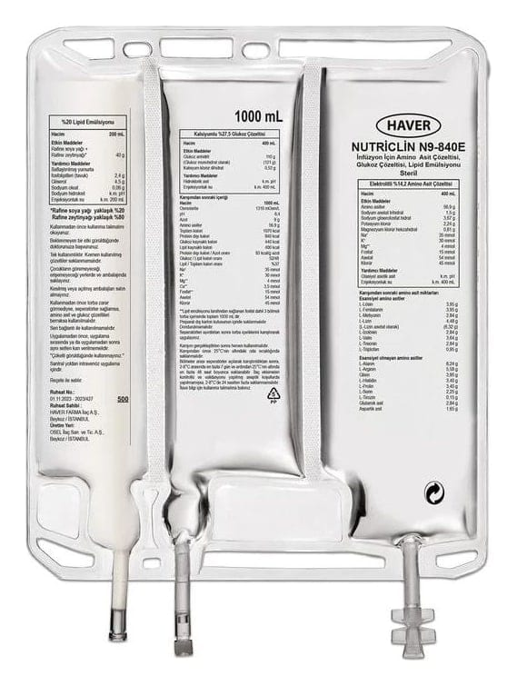

Nutriclin N9-840E IV İnfüzyon İçin Amino Asit Çözeltisi, Glukoz Çözeltisi, Lipid Emülsiyonu, 2000 ml

Ne için kullanılır
KT · Bölüm 1NUTRİCLİN N9-840E, damar içine uygulanan bir emülsiyondur. Üç bölmeli plastik torbalarda bulunan emülsiyon şeklinde bir ilaçtır. Bölmelerden birinde lipit (yağ) emülsiyonu, ikincisinde elektrolitli amino asit çözeltisi ve üçüncüsünde kalsiyumlu glukoz çözeltisi bulunur.Bu bölmeler, geçici seperatörler (ayırıcılar) ile ayrılmıştır.
Amino asit ve glukoz çözeltileri içeren bölmeler karışım gerçekleştirilmeden önce berrak ve renksiz ya da hafifçe sarı görünümlü; yağ emülsiyonu içeren bölümse homojen süt görünümlüdür.
Kullanmadan önce torba üst bölümünden başlanarak kendi üzerine katlanır ve bölmeler arasındaki geçici seperatörler açılarak üç bölme içeriğinin karışması sağlanır.Karışım gerçekleştikten sonra torbanın tümü homojen süt görünümlü olur.
Havada bulunan oksijenle teması önlemek için üç bölmeli torba, oksijen geçirmeyen bir dış torbayla kaplıdır. Dış torba ile iç torba arasında oksijeni soğuran bir saşe bulunmaktadır.
Torbaların 1000 mL, 1500 mL ve 2000 mL’lik üç formu bulunmaktadır.
NUTRİCLİN N9-840E, ağızdan veya enteral (besinlerin ağızdan veya tüple sindirim sistemine verilmesi) beslenmenin uygun olmadığı durumlarda, yetişkinlere ve 2 yaşından büyük çocuklara bir tüp yoluyla damar içine beslenme sağlamak için kullanılmaktadır.
Karışımın beslenme içeriği aşağıdaki şekildedir:
1000 mL 1500 mL 2000 mL Lipitler 40 g 60 g 80 g Amino asitler 56,9 g 85,4 g 113,9 g Azot 9 g 13,5 g 18 g Glukoz 110 g 165 g 220 g Enerji: Yaklaşık toplam kalori Protein dışı kaloriler Glukoz kalorileri Lipit kalori (a)
Protein dışı kaloriler/ azot oranı Glukoz/ lipit kalorileri oranı Lipit/ toplam kaloriler
1070 kcal 840 kcal 440 kcal 400 kcal
93 kcal/g 52/48 %37
1600 kcal 1260 kcal 660 kcal 600 kcal
93 kcal/g 52/48 %37
2140 kcal 1680 kcal 880 kcal 800 kcal
93 kcal/g 52/48 %37 Elektrolitler: Sodyum Potasyum Magnezyum Kalsiyum Fosfat (b) Asetat Klorür
35 mmol 30 mmol 4 mmol 3,5 mmol 15 mmol 54 mmol 45 mmol
52,5 mmol 45 mmol 6 mmol 5,3 mmol 22,5 mmol 80 mmol 68 mmol
70 mmol 60 mmol 8 mmol 7 mmol 30 mmol 107 mmol 90 mmol pH 6,4 6,4 6,4 Osmolarite 1310 mOsm/L 1310 mOsm/L 1310 mOsm/L a Saflaştırılmış yumurta fosfolipitleri kalorileri dahil b Lipit emülsiyonundaki fosfatlar dahil
NUTRİCLİN N9-840E, yalnızca toplardamar içine bu amaca uygun bir plastik boru (set) aracılığıyla ve tıbbi gözetim altında kullanılır.